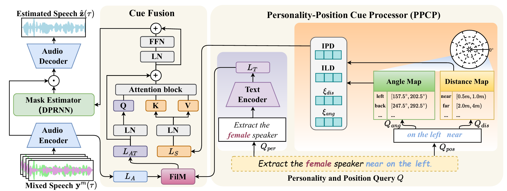

SEPP framework

Our proposed SEPP network estimates the clean target speech \( \hat{\mathbf{z}}(\tau) \) from a multi-channel speech mixture \( \mathbf{y}^m(\tau) \) and a natural language query \( Q \). Specifically, the PPCP parses \( Q \) into position and personality components: the position component is quantized via predefined angle/distance maps to guide extraction of \( L_S \) (IPD, ILD, \( \xi_{\text{ang}} \) and \( \xi_{\text{dis}} \)); the personality component is encoded via a text encoder to produce \( L_T \).